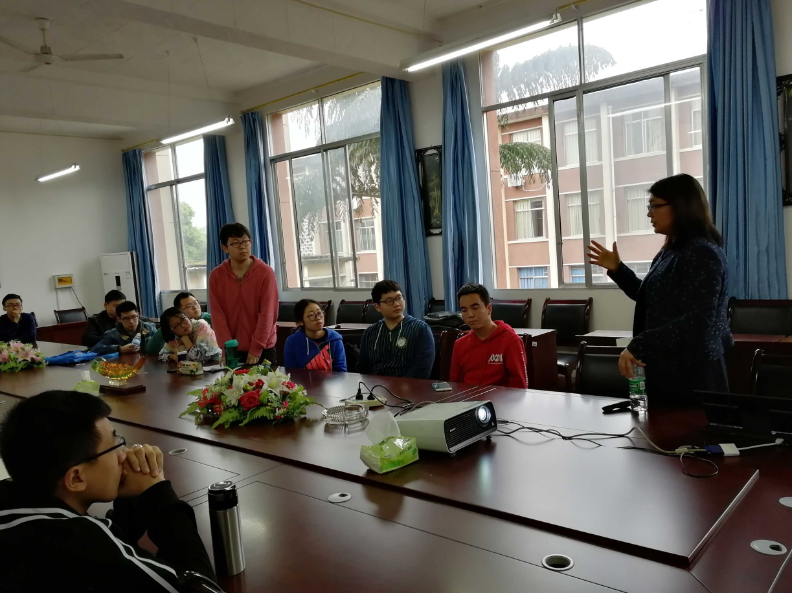
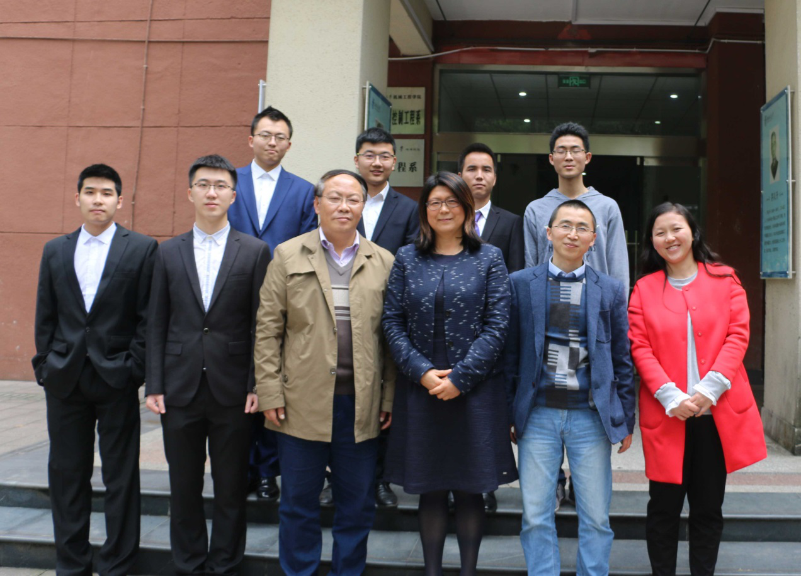

2018春季西南交大峨眉校区留德招生活动
作者：汉斯猫
时间：2018-03-28 09:04:58 | 来源：本站
2018年3月26日，德国奥斯特法利亚应用科学大学（Ostfalia）刘晓波（Xiaobo Liu-Henke） 教授到西南交大峨眉校区对2018届毕业生赴德攻读硕士研究生进行了选拨录取工作。本次为该合作项目第八 次开展的选拨工作， 校区4学生成功被录取，将在今年九月赴德留学。
此次选拔由笔试、口试两个环节组成。26日下午两点首先进行了综合笔试；接着3:50开始了两小时的讲座， 为大家介绍了学校的留学项目和Ostfalia大学；27日上午进行了5个小时的口试。
最后4学生被成功录取，分别是：夏煦东、杨浩、宗尚禹、李泰浩。